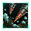
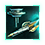

Empire Founder species
|
||||||
|---|---|---|---|---|---|---|
|
|
|
|
|
| |
|
|
|
|
|
| |
|
|
|
|
|
|
|
|
|
|
|
|
||
|
|
|
|
Ship
Ships
A ship is a spaceborne vessel controlled by an empire. They are the primary way of interacting with objects and entities in the galaxy via specific ship orders. Ships are classified into civilian and military vessels, the former being controlled individually while the latter form fleets. All ships must be constructed at a Starbase or Orbital ring with a shipyard module, or with  Federations enabled a Mega Shipyard or a Juggernaut. Each shipyard module can construct or upgrade one ship at a time. Ships can be repaired at any controlled, operational starbase above outpost level.
Federations enabled a Mega Shipyard or a Juggernaut. Each shipyard module can construct or upgrade one ship at a time. Ships can be repaired at any controlled, operational starbase above outpost level.
Shipsets
Each empire will use a shipset, which determines the appearance of its ships and stations and the texture of its megastructures. Randomly generated empires will always match their shipset to their phenotype.
If the  BioGenesis DLC is installed, shipsets have a far greater impact than aesthetics. Ships will be categorized into two types: Mechanical and Biological.
BioGenesis DLC is installed, shipsets have a far greater impact than aesthetics. Ships will be categorized into two types: Mechanical and Biological.
- Mechanical ships use
 Alloys in the construction and upkeep or ships, stations and megastructures. They have 5 shipset-specific ship sizes available: Corvette, Frigate, Destroyer, Cruiser and Battleship. Their
Alloys in the construction and upkeep or ships, stations and megastructures. They have 5 shipset-specific ship sizes available: Corvette, Frigate, Destroyer, Cruiser and Battleship. Their  G-slots can mount torpedo weapons. The
G-slots can mount torpedo weapons. The  Voidcraft tech tree will be expanded to include technologies that unlock or improve ships.
Voidcraft tech tree will be expanded to include technologies that unlock or improve ships.  Cosmogenesis crisis progression can unlock 3 more ship sizes: Riddle Escort, Enigma Battlecruiser and Paradox Titan. Mechanical ships have visible turrets.
Cosmogenesis crisis progression can unlock 3 more ship sizes: Riddle Escort, Enigma Battlecruiser and Paradox Titan. Mechanical ships have visible turrets. - Biological ships use a combination of Alloys and
 Food in the construction and upkeep or ships, stations and megastructures. They have 4 shipset-specific ship sizes available: Mauler, Weaver, Harbinger and Stinger. Those ships come in three growth stages, while other designs have only a single growth stage. Their G-slots can mount mandible weapons. The
Food in the construction and upkeep or ships, stations and megastructures. They have 4 shipset-specific ship sizes available: Mauler, Weaver, Harbinger and Stinger. Those ships come in three growth stages, while other designs have only a single growth stage. Their G-slots can mount mandible weapons. The  Biology tech tree will be expanded to include technologies that unlock or improve ships. Cosmogenesis crisis progression can unlock 4 more ship sizes: Cipher Mauler, Quandary Weaver, Maze Harbinger and Cryptic Stinger. Biological ships do not use turrets.
Biology tech tree will be expanded to include technologies that unlock or improve ships. Cosmogenesis crisis progression can unlock 4 more ship sizes: Cipher Mauler, Quandary Weaver, Maze Harbinger and Cryptic Stinger. Biological ships do not use turrets.
| Shipset | Type | Description |
|---|---|---|
| Arthropoid | Mechanical | Chitin or steel, form or function - there is no distinction. These ships are built less to inspire than to endure, their layered hulls a testament to a philosophy of pure survival.
|
| Avian | Mechanical | Graceful and sleek, these versatile vessels embody the beauty of flight. Every curve and contour speaks of a species that views space not as an obstacle, but as an extension of the sky.
|
| Fungoid | Mechanical | These bulbous vessels evoke the beauty of fungal blooms. Built for self-sufficiency, specialized systems form intricate internal networks, mirroring the logic of the mycelium.
|
| Humanoid | Mechanical | Sturdy and resolute, these vessels are built to endure the trials of deep space. Designed to conquer the unknown, they carry the hopes and dreams of their creators to the farthest stars.
|
| Mammalian | Mechanical | Built to last, these formidable vessels echo their makers' endurance. Dense hulls insulate and protect, while redundant systems ensure survival in the harshest conditions.
|
| Molluscoid | Mechanical | Graceful yet durable, these vessels are both shelter and spear. Beneath hardened shells, complex systems regulate power flow and nutrient cycles with quiet efficiency.
|
| Reptilian | Mechanical | Boxy and utilitarian, this rugged design evokes the resilience of a predator. Their presence in the void is a testament to the cold-blooded tenacity of their makers.
|
| Mechanical | These verdant vessels do not merely travel the stars - they take root among them. Photosynthetic nacelles maintain equilibrium, balancing shipboard biomes.
| |
| Mechanical | Forged by time and pressure, these rocklike vessels embody permanence. Silicon-crystal matrices buttress core systems, drawing strength from the same forces that shape worlds.
| |
| Mechanical | Dark and foreboding, these floating cathedrals are monuments to death and rebirth. Their entropic cores and ritualistic designs whisper of voidborne power and eternal ambition.
| |
| Mechanical | Massive and overbearing, these designs command submission. Reinforced superstructures and redundant systems project an aura of peerless dominion.
| |
| Mechanical | Flowing yet turgid, these ships channel oceanic power. Aqueous interiors and hydrodynamic contours embody the grace of their creators.
| |
| Mechanical | These vessels leak fumes, rattle ominously, and defy every regulation - but they run. Fueled by waste and held together by stubborn ingenuity, they endure where others fail.
| |
| Mechanical | Chrome gleams, circuits hum, and reflexes are a thing of the past. Direct neural uplinks mean no lag, no limits - just pure, high-octane precision.
| |
| Mechanical | These designs reflect the purity of tireless minds. Heat-coiled hulls disperse energy from overclocked mainframes, ensuring flawless operation in the pursuit of absolute efficiency.
| |
| Mechanical | Equipped with advanced plating and psi-deflector arrays, these ships are ready to evade, repel, and destroy psionic weaponry.
| |
| Mechanical | These ships are specialized for psionic crews. Mind interfaces ensure flight and combat control takes place at the speed of thought.
| |
| Mechanical | The bright, molten heat of these ships burns away the cold darkness of space itself. Their tough panels barely contain the fire of the worlds their makers call home.
| |
| Biological | Bred for the bold, these hard-shelled starships do not serve - they endure, growing alongside the fearless explorers that call them home.
| |
| Biological | Born as much as built, these living warships embody apex predation. Their semi-sentient biomass adapts, hunts, and strikes with insatiable will.
|
Utility ships
Utility ships represent all unarmed vessels of an empire and are controlled individually. Their shields, armor, and core components are automatically upgraded once the next tier component tech is unlocked at no cost, and they do not need to return to a Starbase to receive component upgrades. Each utility ship, excluding transports, has a monthly maintenance cost of  1 energy. Construction, science and logistics ships cost
1 energy. Construction, science and logistics ships cost  100 alloys if the empire uses a mechanical shipset and
100 alloys if the empire uses a mechanical shipset and  50 alloys and
50 alloys and  175 food if the empire uses a biological shipset.
175 food if the empire uses a biological shipset.
Utility ships use the evasive fleet stance by default, meaning that they will attempt to escape the system whenever a hostile fleet enters it. They can also be set to a passive stance to ignore hostile fleets.
Construction ship
Construction ships are available to settled empires and used to build every space structure. They are not used up during construction, meaning that they can go on to do other tasks after they have finished their building project. Construction ships also have a Fleet Order that makes them build mining and research stations automatically. Giving an order to a construction ship while it is building something will only add the next order to the queue but the current order can still be canceled via the stop button. Construction ships can construct the following:
| Build order | Mechanical cost | Biological cost |
|---|---|---|
Outpost The Starbase is a space station used to claim star systems and expand your borders. It can only be built in orbit around a star. The full cost is dependent on which star system is being claimed. |
||
Mining Station Mining Stations are used to collect Minerals, Energy Credits and Strategic Resources from uninhabited planets, stars and asteroids. Mining Stations that collect Energy do not cost any upkeep. |
||
Research Station Research Stations are used to collect Physics, Society and Engineering research data from uninhabited planets, stars and asteroids. |
||
Observation Post Observation Posts can be built in orbit around planets inhabited by pre-FTL civilizations to study their society. |
||
Megastructure Megastructures are truly massive construction projects only possible in the zero-g environment of space. |
|
|
Available only with the Overlord DLC enabled. |
 Tier 3 Bulwark subjects can construct Battlewright construction ships, which provide all friendly ships in the same system
Tier 3 Bulwark subjects can construct Battlewright construction ships, which provide all friendly ships in the same system  5% Daily Hull Regen.
5% Daily Hull Regen.
Science ship
Empires can build science ships from the start of the game, and most empires start with a science ship which is ready to be sent out to survey the stars. Every science ship must be assigned a  Scientist leader for the ship to perform tasks such as surveying, exploring uncharted hyperlanes or researching a special project.
Scientist leader for the ship to perform tasks such as surveying, exploring uncharted hyperlanes or researching a special project.
By default, science ships are set to  Evasive stance, which means they will flee any system where hostile ships or spaceborne life forms are present unless they are cloaked and undetected. They can be set to
Evasive stance, which means they will flee any system where hostile ships or spaceborne life forms are present unless they are cloaked and undetected. They can be set to  Passive stance instead, which lets the ship continue its current orders even if the system contains hostile aliens.
Passive stance instead, which lets the ship continue its current orders even if the system contains hostile aliens.
Mechanical Science ships cost  100 Alloys, while Biological counterparts cost
100 Alloys, while Biological counterparts cost  175 Food and
175 Food and  50 Alloys instead. They are built at starbase shipyards, like all other ships. They do not have weapons but are automatically equipped with the latest sensors, engines, reactors, armor, and shields based on the empire's current technology. Science ship components are automatically upgraded as technology advances without the need to refit them at shipyards.
50 Alloys instead. They are built at starbase shipyards, like all other ships. They do not have weapons but are automatically equipped with the latest sensors, engines, reactors, armor, and shields based on the empire's current technology. Science ship components are automatically upgraded as technology advances without the need to refit them at shipyards.
Science ships can do the following actions, all of which require a scientist to be assigned to the science ship:
 Survey gives detailed information about a celestial object, namely deposits, habitability, planet modifiers, planetary features, and discoveries.
Survey gives detailed information about a celestial object, namely deposits, habitability, planet modifiers, planetary features, and discoveries. Research Anomaly investigates an anomaly, with the investigation time dependent on the relative levels of the scientist and of the anomaly.
Research Anomaly investigates an anomaly, with the investigation time dependent on the relative levels of the scientist and of the anomaly. Science Ship Automation opens a menu to automate various tasks.
Science Ship Automation opens a menu to automate various tasks. Experimental Subspace Navigation requires the
Experimental Subspace Navigation requires the  Speculative Hyperlane Breaching technology and the passive stance and allows traveling directly to any explored destination as MIA rather than through the hyperlane network.
Speculative Hyperlane Breaching technology and the passive stance and allows traveling directly to any explored destination as MIA rather than through the hyperlane network. Assist Cloaking Detection requires the
Assist Cloaking Detection requires the  Advanced Detection Algorithms technology, is only available while the ship is not cloaked and grants +1-5
Advanced Detection Algorithms technology, is only available while the ship is not cloaked and grants +1-5  Detection Strength to the selected starbase depending on the skill level of the scientist.
Detection Strength to the selected starbase depending on the skill level of the scientist. Active Reconnaissance is only available while the ship is cloaked and grants +20-100
Active Reconnaissance is only available while the ship is cloaked and grants +20-100  Intel Cap and +10-50% Intel Gain towards the owner of the targeted world depending on its capital tier.
Intel Cap and +10-50% Intel Gain towards the owner of the targeted world depending on its capital tier.
|
|
Available only with the Overlord DLC enabled. |
 Tier 3 Scholarium subjects can construct Arctrellis science ships, which penalize all enemy ships with AI combat computers in the same system with −25% to
Tier 3 Scholarium subjects can construct Arctrellis science ships, which penalize all enemy ships with AI combat computers in the same system with −25% to  Accuracy,
Accuracy,  Fire Rate, and
Fire Rate, and  Ship Speed.
Ship Speed.
|
|
Available only with the First Contact DLC enabled. |
Science ships are always equipped with the latest cloaking components researched, if any. This allows them to investigate inside the borders of empires that do not allow it.
Colony ship
See also: Colonization
Colony ships allow an empire to settle habitable planets or megastructures in owned systems. When ordering the construction of a colony ship, the player is given the option of choosing the species or sub-species of the  pop(s) that is sent to the new colony. Pops are neither consumed nor transported in this process. Once constructed, the colony ship may be sent to any habitable world within an owned system to start a colony. Colony ships take one year to build and their upkeep cost is maintained throughout the whole colonization process. Colony ships can also be built through the interface of the world to be colonized, which automatically queues the colonization order as long as the path is not blocked. Selecting a colony ship will display the species inside.
pop(s) that is sent to the new colony. Pops are neither consumed nor transported in this process. Once constructed, the colony ship may be sent to any habitable world within an owned system to start a colony. Colony ships take one year to build and their upkeep cost is maintained throughout the whole colonization process. Colony ships can also be built through the interface of the world to be colonized, which automatically queues the colonization order as long as the path is not blocked. Selecting a colony ship will display the species inside.
Species require the Colonization Allowed species rights to be selected for new colony ships and if the species rights are changed afterwards those colony ships will not be able to colonize worlds.
The cost of a colony ship depends on the empire and its founder species class.
Empire Founder species
|
||||||
|---|---|---|---|---|---|---|
|
|
|
|
|
| |
|
|
|
|
|
| |
|
|
|
|
|
|
|
|
|
|
|
|
||
|
|
|
|

Empires with the  Corporate Dominion or
Corporate Dominion or  Private Prospectors civics can also construct Private Colony Ships, which cost
Private Prospectors civics can also construct Private Colony Ships, which cost  500 trade instead.
500 trade instead.
Empires with the  Calamitous Birth origin can also construct Lithoid Meteorites, which cost
Calamitous Birth origin can also construct Lithoid Meteorites, which cost  500 minerals instead, have no upkeep cost, and take only 150 days to build. Lithoid Meteorites also have a much faster sublight speed than regular colony ships. A planet colonized by a lithoid meteorite gains two
500 minerals instead, have no upkeep cost, and take only 150 days to build. Lithoid Meteorites also have a much faster sublight speed than regular colony ships. A planet colonized by a lithoid meteorite gains two 
 Buried Lithoids blockers and the
Buried Lithoids blockers and the 
 Lithoid Crater modifier.
Lithoid Crater modifier.
Genesis Guides Genesis Guides
Genesis Guides Astrogenesis Technologies
Astrogenesis Technologies Genesis Symbiotes
Genesis Symbiotes Genesis Architects
Genesis Architects
civics cannot construct regular colony ships, instead constructing Genesis Arks. A planet colonized by a Genesis Ark gains a species with Empires with  Synthetic Fertility origin have same cost as
Synthetic Fertility origin have same cost as  Mechanical empires.
Mechanical empires.
Empires with  Wilderness origin cannot construct colony ships, they colonize worlds by terraforming instead.
Wilderness origin cannot construct colony ships, they colonize worlds by terraforming instead.
Councilors with the 


 Frontier Spirit trait reduce the cost of colony ships by
Frontier Spirit trait reduce the cost of colony ships by  −10%.
−10%.
Logistics ship
|
|
Available only with the Nomads DLC enabled. |
Logistics ships are available to  Nomadic empires. They can only construct waystations and megastructures and cannot built arkships. Each empire can initially have only two logistics ships but the number can be increased by certain technologies and by building
Nomadic empires. They can only construct waystations and megastructures and cannot built arkships. Each empire can initially have only two logistics ships but the number can be increased by certain technologies and by building  Logistics Hub waystation modules.
Logistics Hub waystation modules.
Logistics ships can perform the 
The  Improved Wayline Logistics and
Improved Wayline Logistics and  Advanced Wayline Logistics technologies will increase logistics ship capacity by +2 and their stockpile capacity by +25% each.
Advanced Wayline Logistics technologies will increase logistics ship capacity by +2 and their stockpile capacity by +25% each.
Transport ships
Transport ships are the space based form of assault armies. An army embarking from a planet will automatically generate a transport ship to house it, with the option to automatically "deploy in orbit" being enabled by default on all worlds. While armies have an upkeep cost, transport ships cost no additional  energy to maintain. Transport ships are collected in fleets like military ships, but cannot be combined with military ships and are not listed in the fleet manager.
energy to maintain. Transport ships are collected in fleets like military ships, but cannot be combined with military ships and are not listed in the fleet manager.
During war, transport ships must be carefully escorted by a military fleet since they are unarmed. Their only purpose is to carry assault armies into enemy planets so that they can occupy them. Transport fleets use the passive fleet stance by default, and can be set to use the aggressive stance, which will cause them to follow a military fleet and land on enemy planets with similar or less army strength. Additionally, some special projects require a transport ship to be completed.
|
|
Available only with the First Contact DLC enabled. |
Transport ships will always equip the most advanced cloaking device researched.
Military ships
See also: Space warfare
Military ships represent the armed vessels of an empire. Military ships require both  Energy and
Energy and  Alloys as monthly maintenance, and if they are not stationed at a star base, they will have a
Alloys as monthly maintenance, and if they are not stationed at a star base, they will have a  trade upkeep. Military ships have a number of base stats, but derive most of their stats from components. A military ships components can be customized via the ship designer.
trade upkeep. Military ships have a number of base stats, but derive most of their stats from components. A military ships components can be customized via the ship designer.
Military ships are classified by their hull size, which determines their base combat stats, base cost, and available sections. What hull sizes are available depends on researched technologies and whether the empire uses a mechanical or biological shipset. Empires with the  Progenitor Hive origin can construct more powerful Offspring versions of their regular military ships, while empires with an ambition ascension perk will also unlock new types of military ships.
Progenitor Hive origin can construct more powerful Offspring versions of their regular military ships, while empires with an ambition ascension perk will also unlock new types of military ships.
Titans can only be built at a Citadel-level starbase with a  Titan Assembly Yards or a completed Mega Shipyard. The other regular classes can be built at any starbase or orbital ring with a shipyard module, or at a Mega Shipyard or Juggernaut.
Titan Assembly Yards or a completed Mega Shipyard. The other regular classes can be built at any starbase or orbital ring with a shipyard module, or at a Mega Shipyard or Juggernaut.
Fleets
A Fleet is a group of military or transport ships operating as a single unit and can be assigned a  Commander to act as an admiral or general respectively. Military fleets each maintain a fleet template accessible through the fleet manager and can be assigned a home base to return to automatically. All ships within a fleet must remain within the same system and will synchronize their FTL methods to remain together, though ships can be merged with a fleet anywhere in the galaxy. Merging can either be performed manually between specific ships, or automatically by reinforcing a fleet with missing ships in its fleet template. Reinforcing immediately begins building the most amount of ships possible at the nearest available starbase, with ships entering transit mode to try and reach the same system as their target fleet as soon as they are finished building. Manually built military ships will instead attempt to automatically merge with any fleets in orbit around the same starbase, splitting off into a new fleet if no fleets are found or if none have sufficient fleet command limit available.
Commander to act as an admiral or general respectively. Military fleets each maintain a fleet template accessible through the fleet manager and can be assigned a home base to return to automatically. All ships within a fleet must remain within the same system and will synchronize their FTL methods to remain together, though ships can be merged with a fleet anywhere in the galaxy. Merging can either be performed manually between specific ships, or automatically by reinforcing a fleet with missing ships in its fleet template. Reinforcing immediately begins building the most amount of ships possible at the nearest available starbase, with ships entering transit mode to try and reach the same system as their target fleet as soon as they are finished building. Manually built military ships will instead attempt to automatically merge with any fleets in orbit around the same starbase, splitting off into a new fleet if no fleets are found or if none have sufficient fleet command limit available.
Upgrading ships
Whenever a design is updated, military ships of that design must be upgraded manually at a starbase or orbital ring with a shipyard module, Mega Shipyard, or Juggernaut. The cost of upgrading a ship is the difference in construction cost between the new design and the current one. If the newer design costs less of a resource than the current one, then the upgrade cost is free but resources are not refunded. Each ship upgrades individually, with multiple ships being upgraded simultaneously if the starbase (or equivalent) contains multiple shipyards.
When upgrading a ship, the system attempts to use the current version of the same design name. If no design of the same name exists, then the upgrade process retrofits them to the most-recently saved design of the same ship class instead.
Ships obtained from events that contain components not yet researched should not be allowed to upgrade; upgrading these ships replaces the unresearched components with the latest researched ones, even if those are inferior.
 Naval capacity represents the number of military ships that an empire can effectively support. Going beyond this limit will increase ship maintenance costs by a percentage proportional to the exceeded capacity. For example, if an empire were to exceed its naval capacity by 50%, it would increase the maintenance cost of each ship by 50%. An empire's base naval capacity is 20 and is modified by the following:
Naval capacity represents the number of military ships that an empire can effectively support. Going beyond this limit will increase ship maintenance costs by a percentage proportional to the exceeded capacity. For example, if an empire were to exceed its naval capacity by 50%, it would increase the maintenance cost of each ship by 50%. An empire's base naval capacity is 20 and is modified by the following:
| Naval capacity | |
|---|---|
| Source | Effect |
| +100% | |
| +50% | |
| +10%/+20%/+30%/+40%/+50% | |
| +33% | |
| +33% | |
| +33% | |
| +20% | |
| +20% | |
| +20% | |
| +15% | |
| +15% | |
| +15% | |
| +10% | |
| +10% | |
| +10% | |
| +10% | |
| −10% | |
| −15% | |
| −25% | |
| −25% | |
| −25% | |
| −30% | |
| −30% | |
| −40% | |
| −50% | |
| −10%/−25%/−40%/−60%/−80% | |
Maximum Naval Capacity may never exceed 9999 but empires can still build over it as long as their economy supports the upkeep costs.
Titans have a strict build limit, with a base of 1 allowed per empire; every 800 Naval Capacity increases an empire's Titan build limit by 1, up to a maximum of 13 Titans at 9999 naval capacity. Paradox Titan ( Cosmogenesis) share the same build limit cap as Titan despite having their limit reported separately in the Naval Capacity tooltip. Eg. if you have a Titan limit of 10 with 5 Titans and 3 Paradox Titans then the Naval Capacity tooltip will show Titan: 5/7 and Paradox Titan: 3/5 since you will have 2 unspent Titan cap that can be allocated to building either type of Titan.
Cosmogenesis) share the same build limit cap as Titan despite having their limit reported separately in the Naval Capacity tooltip. Eg. if you have a Titan limit of 10 with 5 Titans and 3 Paradox Titans then the Naval Capacity tooltip will show Titan: 5/7 and Paradox Titan: 3/5 since you will have 2 unspent Titan cap that can be allocated to building either type of Titan.
 Offspring ships have a strict build limit too:
Offspring ships have a strict build limit too:
- Every 1 Naval Capacity increases Offspring Corvette cap by 1
- Every 2 Naval Capacity increases Offspring Destroyer cap by 1
- Every 4 Naval Capacity increases Offspring Cruiser cap by 1
- Every 8 Naval Capacity increases Offspring Battleship cap by 1
Naval coverage is equal to twice the naval capacity used and is used to calculate power projection. Power projection adds  monthly influence based on the ratio of naval coverage to
monthly influence based on the ratio of naval coverage to  empire size. If naval coverage equals or exceeds empire size, power projection adds
empire size. If naval coverage equals or exceeds empire size, power projection adds  +2 monthly influence;
+2 monthly influence;  Imperial authority empires gain
Imperial authority empires gain  +3 monthly influence instead. If naval coverage is less than empire size, power projection is scaled by the percentage ratio. For example, with naval coverage of 50 and empire size of 100 (i.e. 50%), power projection would add
+3 monthly influence instead. If naval coverage is less than empire size, power projection is scaled by the percentage ratio. For example, with naval coverage of 50 and empire size of 100 (i.e. 50%), power projection would add  +1 monthly influence, or
+1 monthly influence, or  +1.5 monthly influence for
+1.5 monthly influence for  imperial authority.
imperial authority.
Fleet command limit
Fleet command limit determines how large any one individual fleet in an empire can be. An empire's base command limit is 50, increased by the following:
| Fleet command limit | |
|---|---|
| Source | Effect |
| +100 | |
| +20 | |
| +20 | |
| +20 | |
| +20 | |
| +20 | |
| +20 | |
(repeatable 5 times) |
+10 |
| +10 | |
| +10 | |
| +10 | |
| +10 | |
| +20 | |
Ship rank
As ships partake in battle, they will increase their rank. Ships start with zero experience. Ships gain  +5 experience every day they are in combat.
+5 experience every day they are in combat.
Ranks are classified as follows:
| Rank | Exp Points | |||
|---|---|---|---|---|
| Regular | 0-99 | 0 | 0 | 0 |
| Experienced | 100-999 | +10% | 0 | 0 |
| Veteran | 1000-9999 | +20% | +5% | +5% |
| Elite | 10000 | +40% | +10% | +10% |
Ship starting experience can be increased by the following:
| Source | Effect |
|---|---|
| +100 | |
| +100 | |
| +100 | |
| +100 | |
| +300 | |
| +150 | |
| +75 | |
| +200 | |
| +200 | |
| +120 | |
| +50 per level | |
| +500 |
Colossal ships
Colossal ships are the largest ships an empire can construct. There are three classes of colossal ships: the Colossus, the Juggernaut, and the Star-Eater. Each Colossal Ship requires a citadel with the  Capital Assembly Yards building or a Mega-Shipyard to be constructed and all colossal ships apart from the Star-Eater can only be constructed once, though they can be rebuilt if lost. Integrating a subject with a colossal ship in its navy will grant the ship to the overlord, bypassing the limit, however these additional ships cannot be rebuilt once lost. Colossal ships cannot use the
Capital Assembly Yards building or a Mega-Shipyard to be constructed and all colossal ships apart from the Star-Eater can only be constructed once, though they can be rebuilt if lost. Integrating a subject with a colossal ship in its navy will grant the ship to the overlord, bypassing the limit, however these additional ships cannot be rebuilt once lost. Colossal ships cannot use the  Phase Fleet order if unlocked.
Phase Fleet order if unlocked.
Colossus

|
|
Available only with the Apocalypse or The Machine Age DLC enabled. |
The colossus is a single-purpose weapons platform built around a Planet-Killer weapon slot, a weapon of mass destruction capable of affecting an entire world. Colossi lack the weapons to attack enemy fleets and, during space battles, will ignore enemies entirely to maneuver straight to its designated target. This means that the colossus will do things such as going straight through an ongoing space battle to fire upon an enemy world, unless its stance is set to Evasive. Each Fallen Empire has a 10% chance to start the game with a colossus and can build more if they have awakened. Constructing a Colossus requires the  Colossi technology, which can be obtained by taking the
Colossi technology, which can be obtained by taking the  Colossus Project ascension perk and then finishing the special project it offers. When the special project is halfway completed, the empire is prompted to choose a starting colossus weapon. The empire can later research other types of colossus weapons and retrofit it into their colossus via the ship designer.
Colossus Project ascension perk and then finishing the special project it offers. When the special project is halfway completed, the empire is prompted to choose a starting colossus weapon. The empire can later research other types of colossus weapons and retrofit it into their colossus via the ship designer.
An empire that owns a colossus gains the Colossus casus belli on every empire and gives every empire the Stop Colossus casus belli on it. If the colossus is destroyed during such a war the casus belli are lost but this will not affect wars already declared.
Using a colossus causes large amounts of  war exhaustion on the targeted empire and gives it +50% ethics attraction towards
war exhaustion on the targeted empire and gives it +50% ethics attraction towards  Militarist and
Militarist and  Xenophobe, causing the diplomatic and political climate of a region to grow increasingly hostile over time.
Xenophobe, causing the diplomatic and political climate of a region to grow increasingly hostile over time.
Targeting a world with a pre-FTL civilization requires owning the system and the Aggressive Interference Native Interference policy. Using a colossus on a pre-FTL civilization gives −40  Opinion with every empire that is not Xenophobe, Xenophile or Genocidal and −60
Opinion with every empire that is not Xenophobe, Xenophile or Genocidal and −60  Opinion with every empire that is Xenophile.
Opinion with every empire that is Xenophile.
A colossus can carry the following weapons:
| Weapon | Effects | (stacks up to 5x) |
Requirements for research | Notes | |
|---|---|---|---|---|---|

|
Global Pacifier |
|
|
If used on a | |

|
World Cracker |
|
|
| |

|
Neutron Sweep |
|
|
|
|

|
Divine Enforcer |
|
|
|
|

|
Nanobot Diffuser |
|
|
||

|
Devolving Beam |
|
|
| |

|
Planet Smelter |
|
|
|
|

|
Deluge Machine |
|
|
|
Unique colossi
Certain colossus ships may be fought during the game and obtained after defeating them. They do not count towards the single-colossus limit and unlike the constructed version they are armed.
 The Toxic Entity is a guardian created at the end of the
The Toxic Entity is a guardian created at the end of the  Knights of the Toxic God story. If the empire with the origin defeats it, it will gain the option to take control of the colossus. The colossus has a weapon that turns habitable planets into
Knights of the Toxic God story. If the empire with the origin defeats it, it will gain the option to take control of the colossus. The colossus has a weapon that turns habitable planets into  Toxic Worlds with the
Toxic Worlds with the 
 Toxic Terraforming Candidate modifier and causes the same
Toxic Terraforming Candidate modifier and causes the same  Opinion penalties as World Crackers.
Opinion penalties as World Crackers. Cetana's Colossus is used by the Synthetic Queen crisis and can be obtained by defeating her via the Shroud option. It uses a
Cetana's Colossus is used by the Synthetic Queen crisis and can be obtained by defeating her via the Shroud option. It uses a  World Cracker and has the biggest component loadout in the game.
World Cracker and has the biggest component loadout in the game.
Juggernaut

|
|
Available only with the Federations DLC enabled. |
The Juggernaut is the mobile center of operations of an entire empire, equipped with shipyards that can construct, repair, and upgrade ships the same way a starbase can. It has 10 times the hull points of a Titan and features six  Hangar slots and two turreted
Hangar slots and two turreted  Extra Large slots. It also has its own set of aura components, which are significantly more powerful than the Titan's auras. Juggernauts do not have logistical upkeep and reduce the logistical upkeep of ships in the same system by 75%.
Extra Large slots. It also has its own set of aura components, which are significantly more powerful than the Titan's auras. Juggernauts do not have logistical upkeep and reduce the logistical upkeep of ships in the same system by 75%.
Juggernauts have 6 shipyards and can thus build or upgrade up to 6 ships at a time. It cannot build Titans or colossal ships, but it can upgrade or repair them. It can also upgrade itself, or upgrade at any shipyard if its own shipyards are busy.
The Juggernaut will automatically start repairing itself after a battle like most stations, and it neither can nor needs to be repaired at a starbase.
Juggernauts can retreat and go Missing in Action to reappear at the nearest friendly starbase like all regular fleets. Fleets can set a Juggernaut as their homebase, though the target location of a "return to homebase", "repair", or "upgrade" order will fail to update in real time if the Juggernaut is still in motion.
Ships built by a juggernaut will automatically follow it until given a different order for the first time.
Fallen Empires do not have access to the single-Juggernaut cap and cannot build them.
Star-Eater

|
|
Available only with the Nemesis DLC enabled. |
The Star-Eater is a massive superweapon used after reaching the fifth tier of the  Galactic Nemesis progression level.
Galactic Nemesis progression level.
The main weapon of a Star-Eater is a Star Cracker that targets the core of a star, collapsing the celestial object into a black hole and destroying the surrounding solar system while collecting massive amounts of  dark matter to fuel the Aetherophasic Engine. Reaching the final ambition level grants the empire two Star-Eaters as well as the technology to build more. Unlike Colossi, Star-Eaters are equipped with regular weapon slots and therefore can engage in regular fleet combat and will always cost an unchanging amount of dark matter to build regardless of the design. Star-Eaters do not require components to be fully powered in order to save a design.
dark matter to fuel the Aetherophasic Engine. Reaching the final ambition level grants the empire two Star-Eaters as well as the technology to build more. Unlike Colossi, Star-Eaters are equipped with regular weapon slots and therefore can engage in regular fleet combat and will always cost an unchanging amount of dark matter to build regardless of the design. Star-Eaters do not require components to be fully powered in order to save a design.
All fleets present except the firing Star-Eater will go MIA. If a system contains multiple stars, firing upon any of them destroys all stars in the system. Cracking a star grants dark matter based on the galaxy size:
| Galaxy size | |
|---|---|
| Tiny | 3000 |
| Small | 2500 |
| Medium | 2000 |
| Large | 1500 |
| Huge | 1000 |
Star-Eaters can target owned stars as well, unless the system contains the empire capital.
If a Star-Eater destroys a system containing the 
 Holy World, the Holy Guardians will instantly awaken and declare a war of subjugation.
Holy World, the Holy Guardians will instantly awaken and declare a war of subjugation.
Paladin ships

{kind=link}
Paladin ships can only be designed and built by members of the Galactic Council after the  Paladin Initiative resolution is passed and the
Paladin Initiative resolution is passed and the  Galactic Custodian finishes the paladin ships special project. Each empire can only build one paladin ship and cannot merge it with regular fleets. Paladin ships of other empires can be controlled by the
Galactic Custodian finishes the paladin ships special project. Each empire can only build one paladin ship and cannot merge it with regular fleets. Paladin ships of other empires can be controlled by the  Galactic Custodian if the
Galactic Custodian if the  Direct Command resolution is passed. If an empire takes the council seat of another empire it will also gain control of its paladin ship.
Direct Command resolution is passed. If an empire takes the council seat of another empire it will also gain control of its paladin ship.
A  Commander can be assigned to a paladin ship. Once assigned the leader will gain the
Commander can be assigned to a paladin ship. Once assigned the leader will gain the 


 Paladin trait as well as a second trait. The second trait can be changed at the cost of 10000
Paladin trait as well as a second trait. The second trait can be changed at the cost of 10000  Unity when the leader is first assigned. If they are replaced they will lose both traits and if they are later assigned to the paladin ship again they will regain them but will not have the option to change the second trait again. The second trait is chosen at random when the leader is assigned to the paladin ships and can be re-rolled by reloading a save.
Unity when the leader is first assigned. If they are replaced they will lose both traits and if they are later assigned to the paladin ship again they will regain them but will not have the option to change the second trait again. The second trait is chosen at random when the leader is assigned to the paladin ships and can be re-rolled by reloading a save.
If the  Paladin Initiative resolution is repealed all paladin ships are scuttled.
Paladin Initiative resolution is repealed all paladin ships are scuttled.
Paladin ships can have up to 5 abilities:
| Ability | Effects | ||
|---|---|---|---|
| Paladin Aegis | 5000 | 360 days | +1000% Shield Hit Points, +75% Daily Shield Regen and +15% Shield Hardening for 3 months |
| Lance of Valor | 5000 | 360 days | A random hostile fleet takes 3750 Damage. Repeats for each 100000 (May be difficulty based?) |
 Recall |
1000 | 720 days | Teleports to the nearest non-hostile Starbase or Arkship and repairs 25% of Hull and Armor |
{kind=link}
{kind=link}
{kind=link}
Commander abilities
One of the following abilities will become available if a  Commander is assigned to the paladin ship, depending on its traits.
Commander is assigned to the paladin ship, depending on its traits.
| Ability | Effects | Trait | ||
|---|---|---|---|---|
| 7500 | 270 days | −85% Point Defense Damage, Strike Craft Damage and Strike Craft Regenerations for all enemy ships for 3 months | ||
| 7500 | 270 days | +10% Hull Regen, Armor Regen and Armor Hardening for all friendly ships for 3 months | ||
| 7500 | 270 days | +30% Ship Fire Rate, +30 Damage Reduction, +2.5 Bonus Damage Relative to Size and −125% Combat Disengagement Chance for all friendly ships for 3 months | ||
| 7500 | 270 days | +25% Ship Fire Rate, +25 Damage Reduction, +25 Armor Penetration, +2 Bonus Damage Relative to Size and −75% Combat Disengagement Chance for all friendly ships for 3 months | ||
| 7500 | 270 days | +10 Damage Reduction, +25% Shield and Armor Penetration and +50% Accuracy for all friendly ships for 3 months | ||
| 7500 | 270 days | +35% Ship Fire Rate, +75% Shield and Armor Penetration and +20% Accuracy for all friendly ships for 3 months | ||
| 7500 | 270 days | +35 Damage Reduction, +45% Damage Reduction and 1000% focus fire effect for 3 months |
Paladin Focus abilities
The following abilities are unlocked by the  Focus Paladin Initiative resolutions. Only one can be passed
Focus Paladin Initiative resolutions. Only one can be passed
| Ability | Effects | Resolution | ||
|---|---|---|---|---|
| 10000 | 360 days |
|
||
| 10000 | 360 days | +7.5% Damage Reduction, Fire Rate and Evasion Chance per paladin in system for 3 months | ||
| 10000 | 360 days | +20% Range, Damage and Sublight Speed for all friendly ships for 3 months |
Paladin Training abilities
The following abilities are unlocked by the  Training Paladin Initiative resolutions. Only one can passed
Training Paladin Initiative resolutions. Only one can passed
| Ability | Effects | Resolution |
|---|---|---|
| Synergy |
|
|
| Defense |
|
|
| Offense |
|
Cloaking
|
|
Available only with the First Contact DLC enabled. |
Cloaking allows a fleet to become invisible and ignore closed borders and will not become MIA if war is declared against the system's current owner. It also allows a Science Ship to conduct  Active Reconnaissance and if the empire is
Active Reconnaissance and if the empire is  Nomadic it prevents the
Nomadic it prevents the  Opinion penalty if the settled empire uses the Outlawed nomad border policy. However most cloaking components will disable shields and even the ones that don't impose certain restrictions on shields. A ship can only cloak every 120 days and will automatically decloak if attacking. Ships and fleets that are cloaked are marked with horizontal stripes on the galaxy map. Science and transport ships are always equipped with the latest researched cloaking device.
Opinion penalty if the settled empire uses the Outlawed nomad border policy. However most cloaking components will disable shields and even the ones that don't impose certain restrictions on shields. A ship can only cloak every 120 days and will automatically decloak if attacking. Ships and fleets that are cloaked are marked with horizontal stripes on the galaxy map. Science and transport ships are always equipped with the latest researched cloaking device.
Each ship has a  Cloaking Strength, and each fleet has a
Cloaking Strength, and each fleet has a  Cloaking Strength determined by the lowest one of all ships in the fleet. It determines what penalties a fleet will suffer while cloaked as well as how easy it is to detect.
Cloaking Strength determined by the lowest one of all ships in the fleet. It determines what penalties a fleet will suffer while cloaked as well as how easy it is to detect.
| Cloaking Strength | Description | ||
|---|---|---|---|
| Non-Existent | Cannot cloak | Cannot cloak | This fleet is incapable of projecting a Cloaking Field.
|
| Very Low (1) | −50% | +125% | This fleet is capable of projecting a severely unstable Cloaking Field, with significant limitations of Sublight Speed and Hyper Jump Charge Time.
|
| Low (2) | −40% | +100% | This fleet is capable of projecting an unstable Cloaking Field, with major limitations of Sublight Speed and Hyper Jump Charge Time.
|
| Medium (3) | −30% | +75% | This fleet is capable of projecting a Cloaking Field of normal stability, with some limitations of Sublight Speed and Hyper Jump Charge Time.
|
| High (4) | −20% | +50% | This fleet is capable of projecting a high stability Cloaking Field, with minor limitations of Sublight Speed and Hyper Jump Charge Time.
|
| Very High (5) | −10% | +25% | This fleet is capable of projecting an incredibly stable Cloaking Field, with insignificant limitations of Sublight Speed and Hyper Jump Charge Time.
|
| Exceptional 6+ | No penalty | No penalty | This fleet is capable of projecting an exceptionally stable Cloaking Field, without any limitations of Sublight Speed and Hyper Jump Charge Time.
|
 Cloaking Strength can be increased by the following, up to the maximum of 10:
Cloaking Strength can be increased by the following, up to the maximum of 10:
- +1-5 by cloaking ship
 Auxiliary components, depending on the size of the ship and the level of the component. A ship without a cloaking device can't cloak, even if it would gain additional strength from other sources.
Auxiliary components, depending on the size of the ship and the level of the component. A ship without a cloaking device can't cloak, even if it would gain additional strength from other sources. - +1 from finishing the
 Subterfuge tradition tree
Subterfuge tradition tree - +1 from the
 Criminal Heritage civic
Criminal Heritage civic - +1 from the Dark Consortium
 Dark Consortium
Dark Consortium Shadow Corporation
Shadow Corporation Obsidian Veil edict
Obsidian Veil edict - +1 from the Astral Cloaking edict
- +1 from the


 Material Liberator II commander trait
Material Liberator II commander trait - +2 from the

 Guerilla Tactician commander trait
Guerilla Tactician commander trait - +2 from the
 Spyware Directives civic
Spyware Directives civic - +2 from the
 Enigmatic Engineering ascension perk
Enigmatic Engineering ascension perk - +2 from the

 Confidential Research I scientist trait
Confidential Research I scientist trait - +3 from the Confidential Research II scientist trait
- +3 from the
 Confidential Research III scientist trait
Confidential Research III scientist trait - +3 if the fleet is inside a Nebula
- +10 if the fleet is inside a
 Stardust Storm
Stardust Storm - +2 from forming a covenant with
 Whisperers in the Void and
Whisperers in the Void and  Shadows of the Shroud is not installed
Shadows of the Shroud is not installed
A cloaked fleet will be detected if it is within the sensor range of a starbase with  Detection Strength higher than or equal to the fleet's
Detection Strength higher than or equal to the fleet's  Cloaking Strength, or the empires have max
Cloaking Strength, or the empires have max  Intel on the cloaked fleet owner, or have sensor link with an empire that detected the fleet. Non-allied cloaked fleets, once detected, are forced to decloak in border.
Intel on the cloaked fleet owner, or have sensor link with an empire that detected the fleet. Non-allied cloaked fleets, once detected, are forced to decloak in border.
References
Game concepts
| Exploration | Exploration • FTL • Unique systems • L-Cluster • Pre-FTL species • Fallen empire • Spaceborne aliens • Enclaves • Guardians • Marauders • Caravaneers |
| Celestial bodies | Celestial body • Colonization • Planetary features • Planet modifiers |
| Discovery | Discovery • Anomaly • Archaeological site • Astral rift • Relics • Collection |
| Species | Species • Pop modification • Biological traits • Machine traits • Population • Species rights • Ethics |
| Leaders | Leader • Common leader traits • Commander traits • Official traits • Scientist traits • Paragons |
| Governance | Empire • Origin • Government • Civics • Council • Policies • Edicts • Factions • Traditions • Ascension perks • Ambition • Situations |
| Economy | Resources • Planetary management • Districts • Jobs • Designation • Trade • Megastructures • Waystation |
| Buildings | Planet capital • Common buildings • Planet unique • Empire unique • Holdings |
| Ships | Ship • Arkship • Ship designer • Core components • Weapon components • Utility components • Mutations • Offensive mutations |
| Technology | Technology • Physics research • Society research • Engineering research |
| Diplomacy | Diplomacy • Relations • Galactic community • Federations • Subject empires • Intelligence • Contracts • AI personalities |
| Warfare | Warfare • Space warfare • Land warfare • Starbase • Crisis |
| Others | Events • The Shroud • Preset empires • AI players • Stat modifiers • Console commands • Easter eggs |